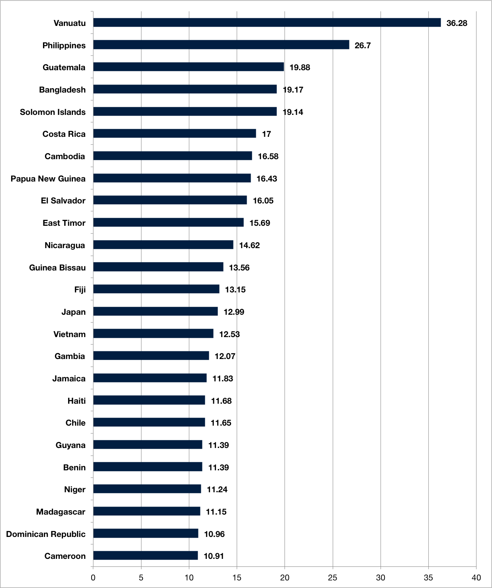

Map of expected current travelers and past travelers from January 2016 through August 2016 within the GU community (use the radio buttons to switch between these two groups). The shade of each country represents community member concentration, while the series of markers indicate the number of terrorist attacks, World Risk Indices (a comprehensive measure of natural disaster risk provided by the WorldRiskReport), and the presence of Zika virus (Zika data provided by CDC). Click the markers for more details.
Expected travelers from 9/1/2016-12/31/2016
Travelers from 1/1/2016-8/31/2016
Incidents by Country
Top World Risk Indices
Figures provided by World Risk Report